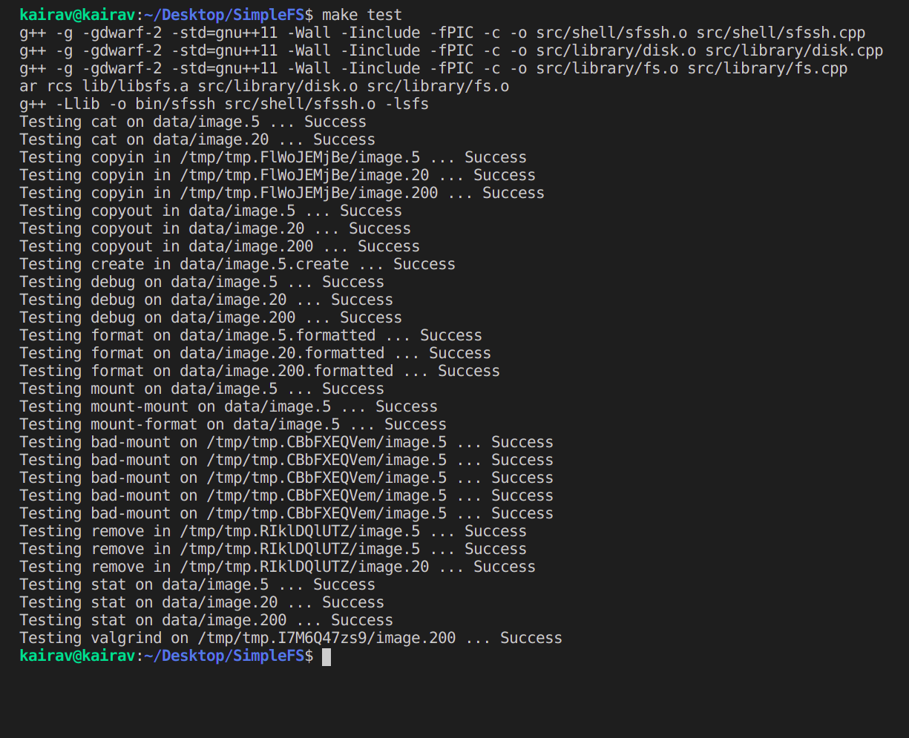

Introduction
The file system is a layer of abstraction between the storage medium and the operating system. In the absence of a file system, it is tough to retrieve and manage data stored in the storage media. File systems provide an interface to access and control the data. It is implemented by separating data into chunks of predetermined size and labeling them for better management and operability. There are several types of file systems available out there. Some major examples are as follows: Disk-Based, Network-Based, and Virtual based.
Here, we provide a simple implementation of a disk-based file system. A custom shell is also provided to access the file system. The shell (sfs) and the disk emulator were pre-implemented by the University of Notre Dame. Our task was to build upon the given tools and implement the File System layer and, in doing so, bridge the gap between shell and disk emulator.
Features
- Ability to view and modify data stored in the disk.
- Disks can be accessed only in blocks of size 4KB (can be changed in the disk implementation).
- A file system is an abstraction layer that allows the user to modify the disk without worrying about the block size.
- The file system weighs the tradeoff between performance and storage to make the user’s life simpler.
- Format the disk and mount a new file system.
- Usually, a signature is used to verify the file system’s integrity every time the disk is mounted. SimpleFS uses one such “Magic Number” to ensure that a compatible file system is being mounted. This magic number is loaded upon formatting the disk.
- Our implementation of the format() function hard-resets the disk, i.e., it does not only delete the inodes but sets each byte to zero.
- The number of blocks for metadata and storage purposes is dependent on the type and implementation of the file system used.
- Our implementation uses one single block named “superblock” to store metadata, 10% blocks to store inodes, 1% blocks to store directories and files. The remaining blocks are used to store raw data.
- Create, Read and Write inodes.
- Inodes are data structures that are used to store files. The data to be stored is saved across an array of direct blocks and indirect blocks. Such distinction is made so that the access time for small files is significantly reduced.
- The indirect block is simply an array of pointers to raw data blocks. This implementation has a major pitfall: it limits the maximum size of files. A simple workaround is to make the last pointer of the indirect block point to another indirect block. We have not yet implemented this scheme in order to keep the file system simple.
- The implementation provides functions to create, read, and write inodes. Support for directly creating files and directories has been added as an extra feature.
- The inodes store extra data in its member variables to enable features such as permissions. Though we have not implemented this feature, it can be easily achieved.
Additional-Features
- Added support for directly creating files and multi-level directories.
- Used additional data structures to maintain directories.
- Files and directories are associated with a name for user’s ease and can be accessed from the root directory.
- Nested files and directories are stored as entries into the parent directory’s table.
- The maximum number of directories per block and entries per directory is an implementation choice. It can be changed by modifying the corresponding value in the code.
- Implemented 10 Linux shell commands.
- ls - list the contents of the directory
- cd - change directory
- mkdir - create a new directory
- rmdir - remove a directory
- stat - display information of all directories
- touch - create an empty file
- copyin - import a file into the file system
- copyout - export a file from the file system
- rm - remove a file or directory
- Three password protection commands - change, set, and remove
- Added Security layer to encrypt and decrypt the disk.
- Used a library to make use of SHA256 encryption.
- The user password is hashed using this function to prevent password leaks, if any.
- The hashed password is stored right in the superblock as most of the space in this block is left unutilised.
- Upon mounting the disk, the user is prompted to enter the password. Only after logging in can the user access the disk and make use of the user functions.
Future-Aspects
- Extend support to devices
- A device descriptor is a number used by the operating system to identify the device uniquely. An array of device descriptors is used to support multiple devices.
- Support for devices can be added by mapping these device descriptors to the device drivers.
- The standard read/write functions are overridden by the device driver’s corresponding functions. This ensures a consistent universal interface for devices as well as files.
- The only difference is an additional field that is needed to store the device descriptor.
- Generally, the file systems are equipped with caching and buffer layers for files. Thus, the universal interface can ensure the same crash recovery for devices too.
- Extend support to networks
- Similar to devices, support for networks can be extended by mapping network descriptors to device drivers.
- A significant benefit of handling networks and devices as regular files is that the file system’s implementation remains universal and minimal.
- An end-user need not worry about the devices/networks as a separate entity. The OS and file system provides a consistent interface.
- NIC - Network Interface Controller - is used to handle networks. The OS interacts with its device driver to transmit information across the network. These device drivers can be used by the file system to support networks.
- Add a caching layer for faster access time.
- A caching layer ensures faster access time by making use of “locality of reference.”
- To make use of the cache layer, read/write accesses are redirected to request the caching layer and access the main disk only if the requested data is absent.
- If the requested data is not present in the cache layer (known as “cache miss”), it is retrieved from the disk and stored in the cache for future use. Cache replacement algorithms such as LRU (Least Recently Used) can be used to ensure efficiency.
- The “writes” to the disk are not immediately serviced - these changes are made in the cache layer and later stored to the disk only when absolutely necessary. This phenomenon is referred to as “cache hit”.
- This feature can significantly reduce the number of read/write calls to the disk. This has immense ramifications as secondary storage accesses are costly, and any improvement at this level affects the entire pipeline.
- Add a logging layer for crash recovery.
- A system crash (or any interrupt for that matter) during a disk operation may leave the disk in an inconsistent state. It is imperative to implement crash recovery algorithms that can restore the disk to its original state.
- To implement this functionality, all system calls that request access to disk are maintained in log files. Once the system call has logged all its requests, a special commit record is maintained in the disk, indicating that the log represents a complete operation.
- The system call is now allowed to perform its disk operations. Only if the disk operations are executed successfully, the log file is deleted. In case of a crash, this log file is used to rollback the changes and restore the disk to a working state.
- This ensures that the operations are either completed in their entirety or no single operation is performed.
- Add support for multi-processor computers.
- The current implementation is dependent on several shared variables and objects. This prohibits the computer from making use of its efficient multiprocessing power because of issues such as race conditions.
- This issue can be resolved using tools such as mutexes, semaphores, or spinlocks.
- Spin-locks are an excellent choice when the critical section is small. In contrast, a more extensive critical section may require mutexes.
- Synchronized code ensures the correctness of the code even when executed on a multiprocessor system.
- Encryption of disk.
- The current password protection implementation is minimal as it does not prevent the adversary from creating their file system to access the data stored on the disk without ever entering the password.
- Hence, to provide a much more secure system, the entire disk can be encrypted using advanced encryption algorithms.
Results
- Passed all the tests provided by the University of Notre Dame (run “make test”).
- Added support for password protection.
- Added support for directories and files. 
Refrences
- https://www3.nd.edu/~pbui/teaching/cse.30341.fa17/project06.html - Notre Dame University for providing the project and the boilerplate code
- https://drive.google.com/file/d/1oL5cUGzU7IchOZO_Jx7R9j8HqGxJ-wDX/view - File System lecture slides by Dr. Chester Rebeiro
- https://en.wikipedia.org/wiki/File_system - Wikipedia entry for File Systems
Contributions
- Kairav Shah: implemented the core functions: debug, format, mount, create, remove, write, read.
- Rudra Desai: added extra functionalities to the file system: password protection, several Linux commands, support for directories and files.